La Guinée est un pays hors des circuits touristiques qui déploie d'extraordinaires
paysages, des eaux folles et promet de belles rencontres humaines.
Qualifiée de château d'eau de l'Afrique occidentale,
c'est sur son territoire que plusieurs fleuves majeurs du continent prennent leur source : Senegal, Gambie, Niger.
Pays accidenté et très arrosé, la Guinée se découpe en quatre grandes régions naturelles : la Guinée-Maritime ou Basse-Guinée qui déroule ses côtes le long de l'océan Atlantique ; la Moyenne-Guinée, région montagneuse qui comprend le massif du Fouta Djallon ; la Haute-Guinée, zone de savane au nord ; au sud-est la Guinée Forestière. A chacune de ses régions, son relief, son climat, sa faune, sa flore, ses traditions historiques et culturelles.
Conakry, la capitale, est une ville côtière de la Basse-Guinée.
SITE TOURISTIQUE
Son centre historique se situe sur l'île de Tombos relié au continent par une digue. Conakry compte 4,5 millions
d'habitants sur près de 17 millions recensés dans le pays. Le reste de la population guinéenne vit essentiellement en zone rurale (70%).
Le littoral guinéen jouit d'une grande diversité de paysages. Au large de Conakry, les îles Loos présentent des plages de
sable blanc et fin. Dans la préfecture de Boffa, à 225 km de Conakry, la plage de Bel Air est sans doute l'une des plus
belles de la côte ouest africaine avec ses sept kilomètres de sable fin blanc argenté, bordés de cocotiers.
Entre Conakry et Boffa, la Baie de Sangareyah, elle, est caractéristique pour sa forêt de mangrove traversée de bras de
mer navigable et arrosée par une série de cours d'eau. C'est sur le littoral que l'on trouve également de nombreux sites
négriers, vestiges de la traite des esclaves. Parmi lesquels : le pénitencier de Fotoba (à Conakry), Dominya et Farinyah
dans Boffa et Fortin de Boké, un grand entrepôt d'esclaves de l'Afrique de l'Ouest.
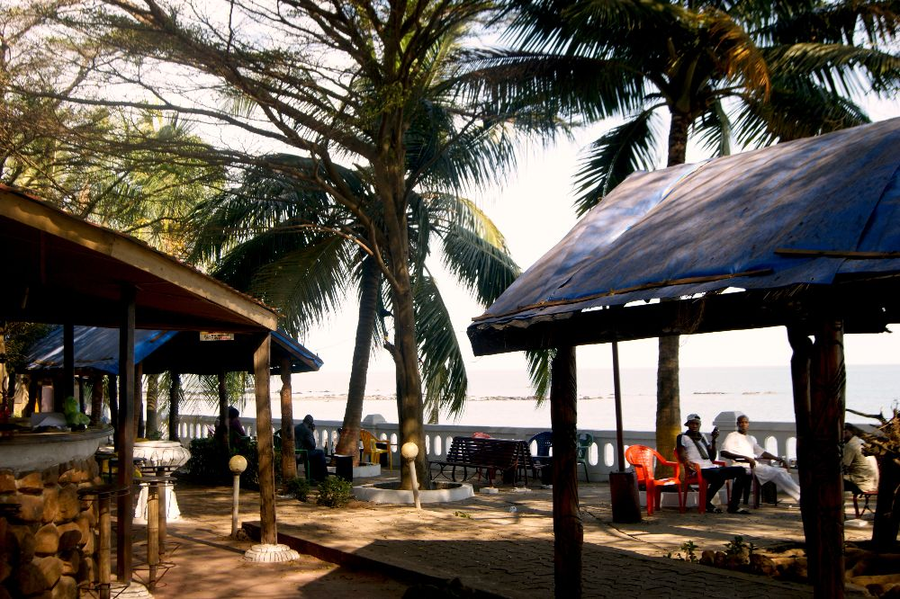
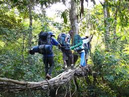
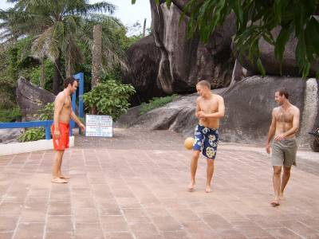
FAUNE ET FLORE
En Moyenne-Guinée le massif montagneux de Fouta Djalon constitue un des rares points émergents du relief de l'Afrique de
l'Ouest, on y trouve d'ailleurs le point culminant, le mont Nimba à 1752 m. C'est aussi ici que le fleuve Niger prend sa
source, à Kobikoro dans la préfecture de Faranah. Une escapade dans le parc national du Badiar sera aussi l'occasion de
découvrir des cimetières de missionnaires blancs, une rôneraie naturelle et d'observer des abeilles guerrières. Aux
alentours, le parc de Sankarani est l'une des rares forêts vierges de la région.
La Moyenne-Guinée est le domaine des Peuls, peuple d'éleveurs. Soussous en Basse-Guinée, Malinké en Haute-Guinée,
et Guerzé, Tomas et Kissis en Guinée Forestière sont les autres principaux groupes ethniques du pays. La Haute-Guinée
et la Guinée Forestière abrite des parcs nationaux et réserve forestière qui valent le détour notamment pour leur faune.
On peut par exemple observer des éléphants blancs dans la forêt de la Ziama à Macenta, en Guinée Forestière.
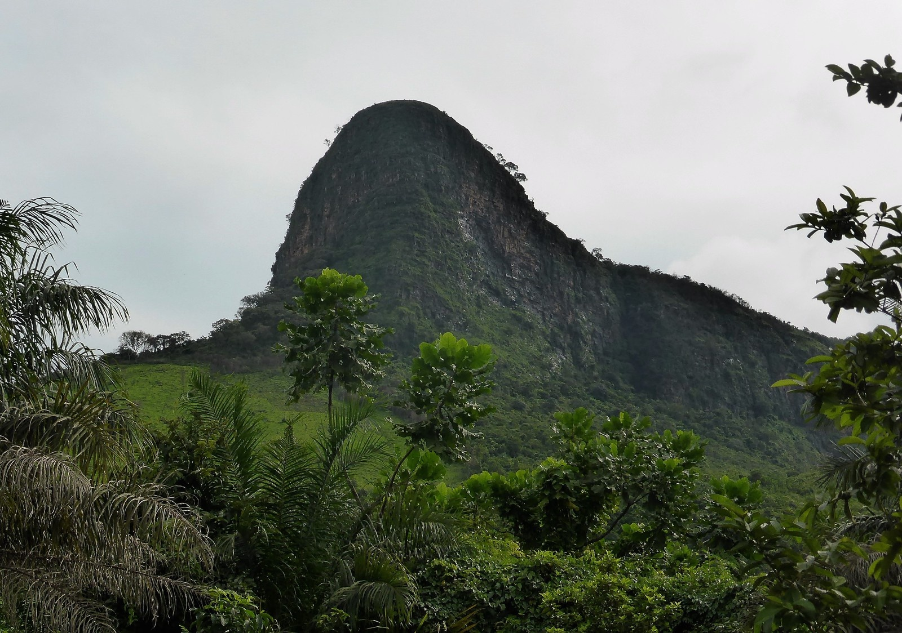
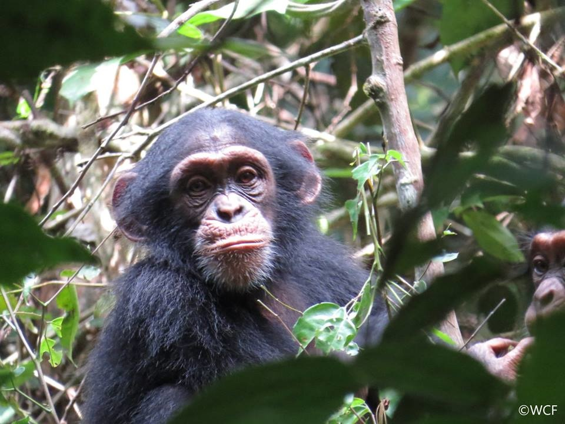
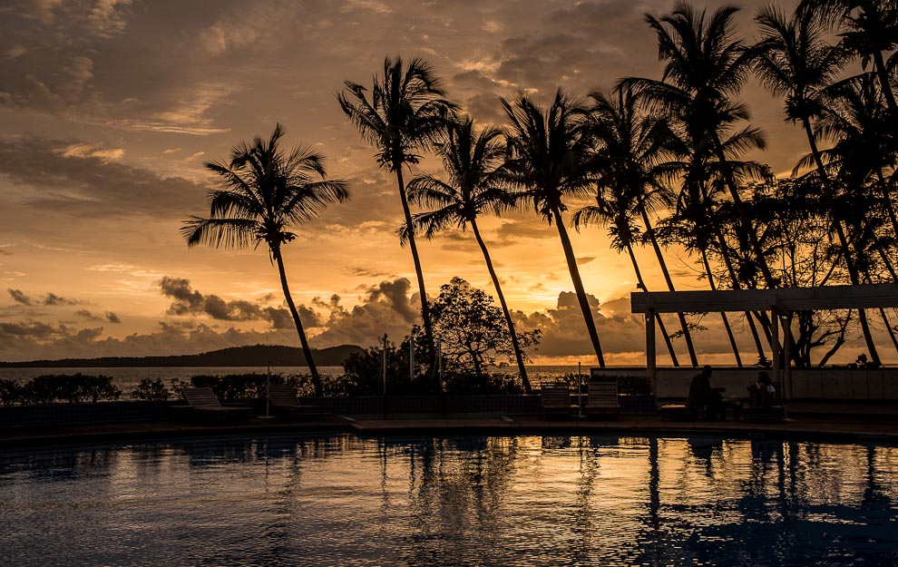
ART ET CULTURE
La musique, traditionnelle ou moderne, tient une place très importante dans la culture guinéenne.
L'Orchestre national de Guinée joue avec des instruments africains authentiques, comme le djembé, la kora
(calebasse recouverte de peau) ou le balafon (genre de xylophone). Tout comme un concert de l'orchestre national
de Guinée, un spectacle de danse du Ballet national de Guinée vaut aussi la peine d'être vu. On pourra trouver
ces instruments de musique sur les marchés locaux ainsi que des pagnes colorés, des carpettes, des sculptures sur
bois, des poteries, des objets recouverts de cuir tressé, des calebasses.
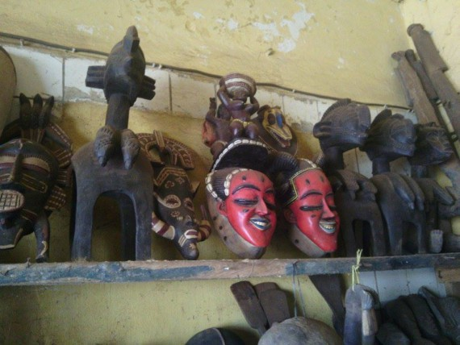
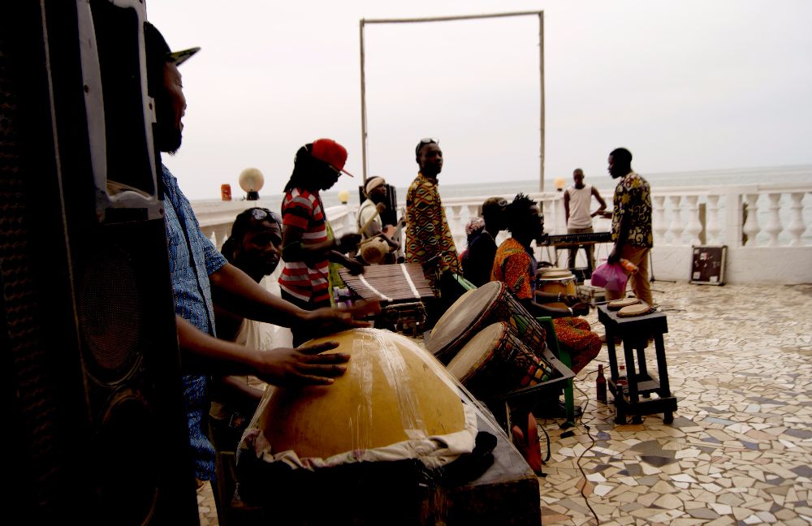
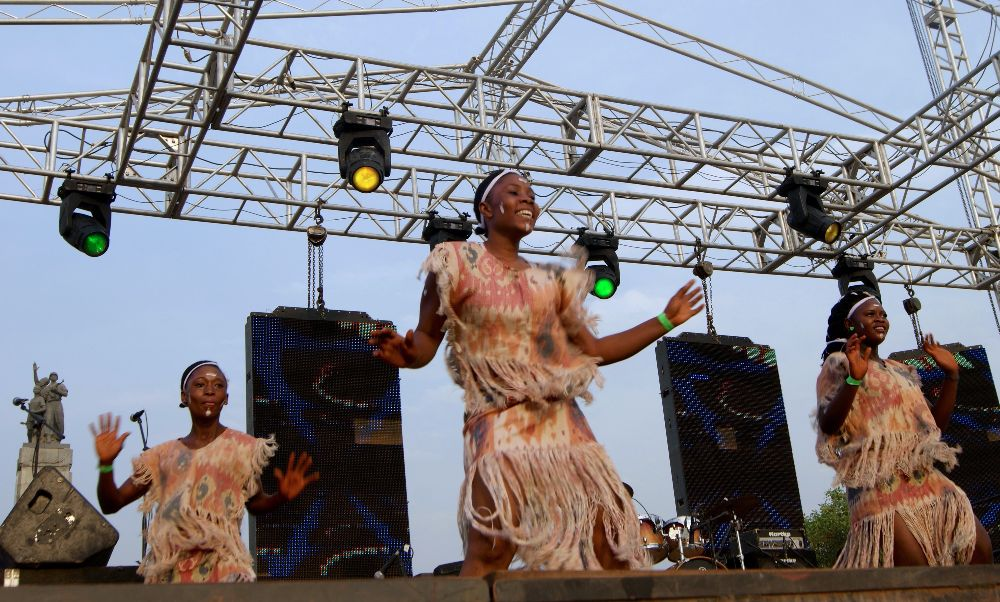
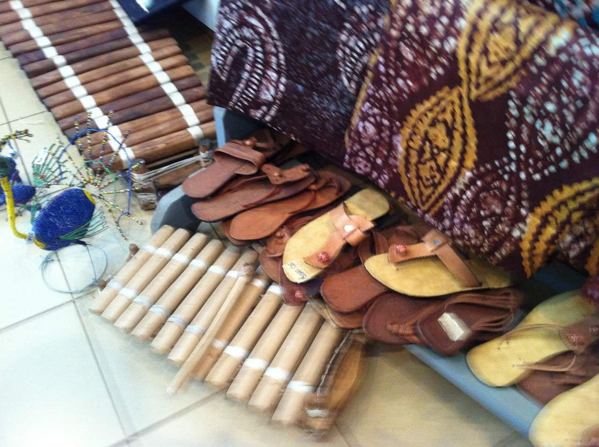
ESPACE HOTELIER
La guinée à en son sein de nombreux hotels selon des cathegories, (Cinq etoiles, 4 etoiles, 3 étoiles,2 etoiles). la plupart des plus grands hotels se trouve à conackry la capitable.
Vous pouvez decouvrir les games d'hotels sur le site www.hotels24.com. vous avez des posibilités de faire des réservations a distance.
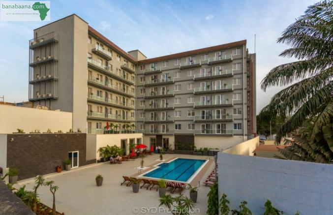
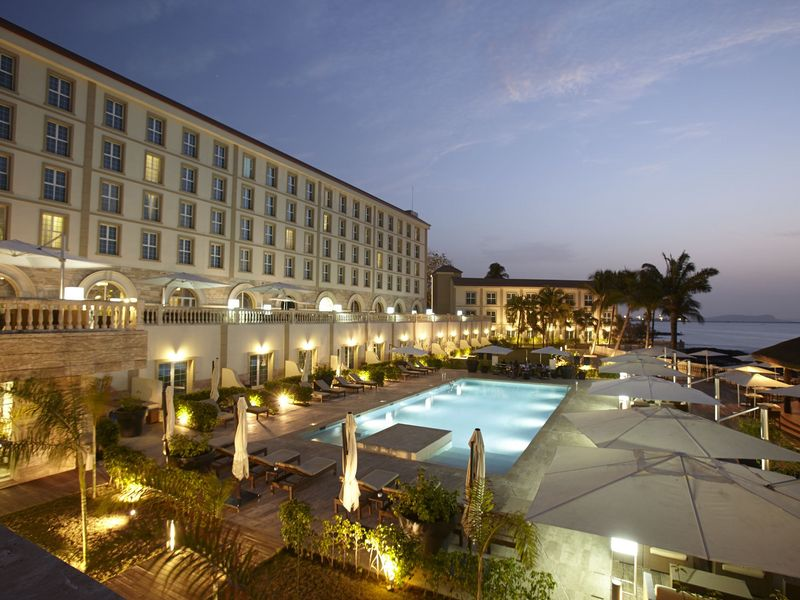
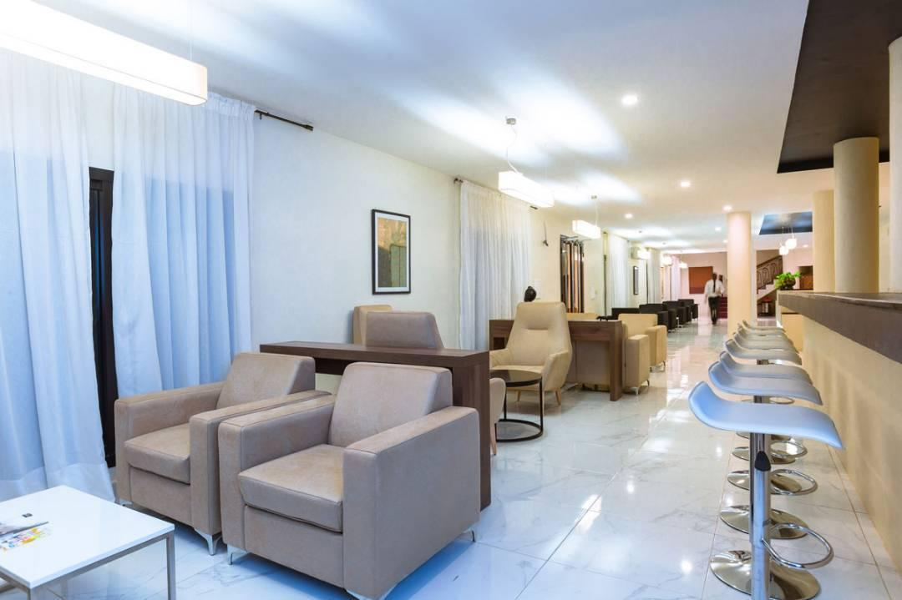
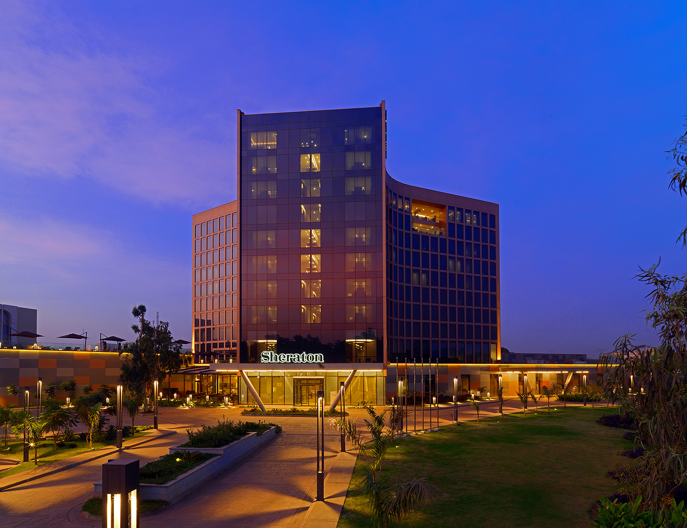
SPECIALITE GASTRONOMIQUE
Le riz, manioc, maïs et igname constitue l'essentiel de l'alimentation guinéenne. En Guinée, tous
les plats sont généralement servis avec du riz, épicé ou non. Le manioc peut être cuit, râpé avec du poisson
ou des boulettes de viande. Le manioc lui est cuisiné en purée, façonnée en grosses boules accompagnées
de sauce arachide. Le riz jollof, un poulet farci à l'arachide, le couscous au lait, le taro gluant et la banane
loko sont des plats traditionnels. En dessert, on peut goûter au bould akassa (ou kagna),
une pâtisserie à base de pâte d'arachide, farine de maïs, riz ou de fonio avec du sucre en poudre.
Ecotourisme:
TRANSPORT
Les bus et minibus desservent toutes les villes du pays. Pour les plus petites distances, les taxis-brousse
sont plus rapides et plus économiques. Il est possible de louer une voiture en Guinee, un 4x4 de préférence en
évitant de circuler le soir.
Mieux vaut toujours garder ses papiers sur soi : les barrages policiers ou militaires sont fréquents.
CONTACTEZ-NOUS
la Guinée offre pourtant des paysages magnifiques
et variés : plages paradisiaques du littoral, pics, falaises et lacs de Moyenne-Guinée, splendeurs boisées de la Guinée forestière … Le pays est aussi riche d'une population naturellement accueillante et chaleureuse.
.
 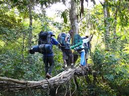
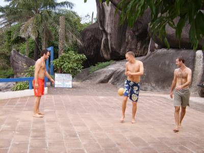
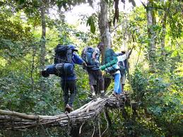
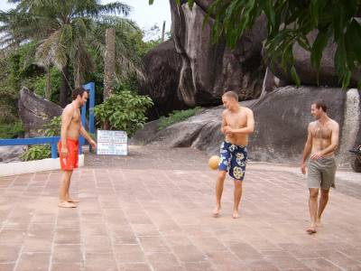
 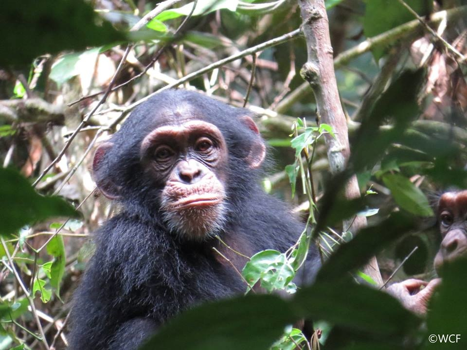
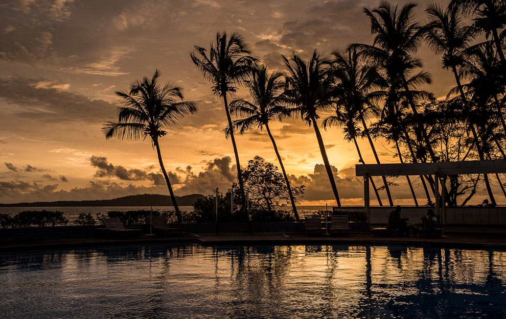
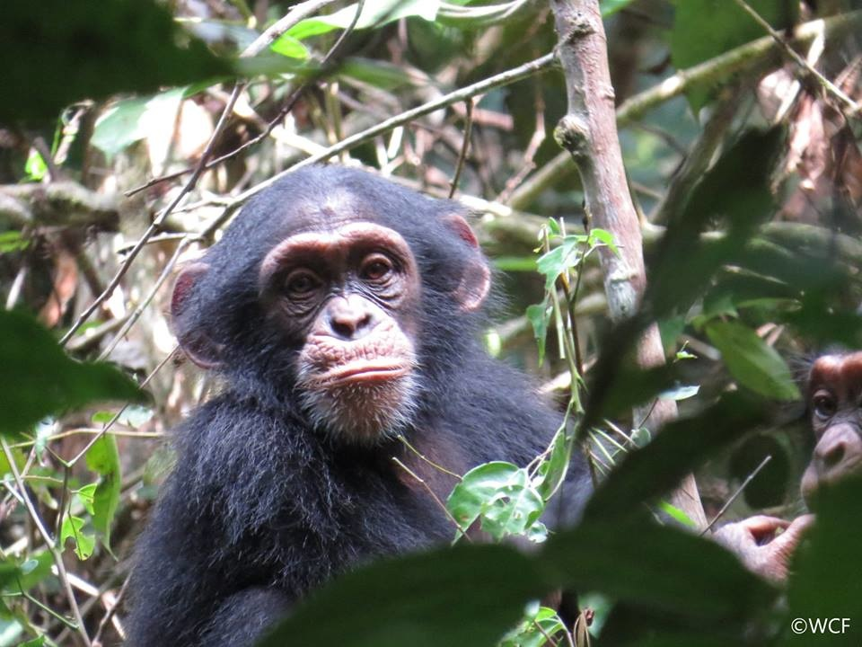
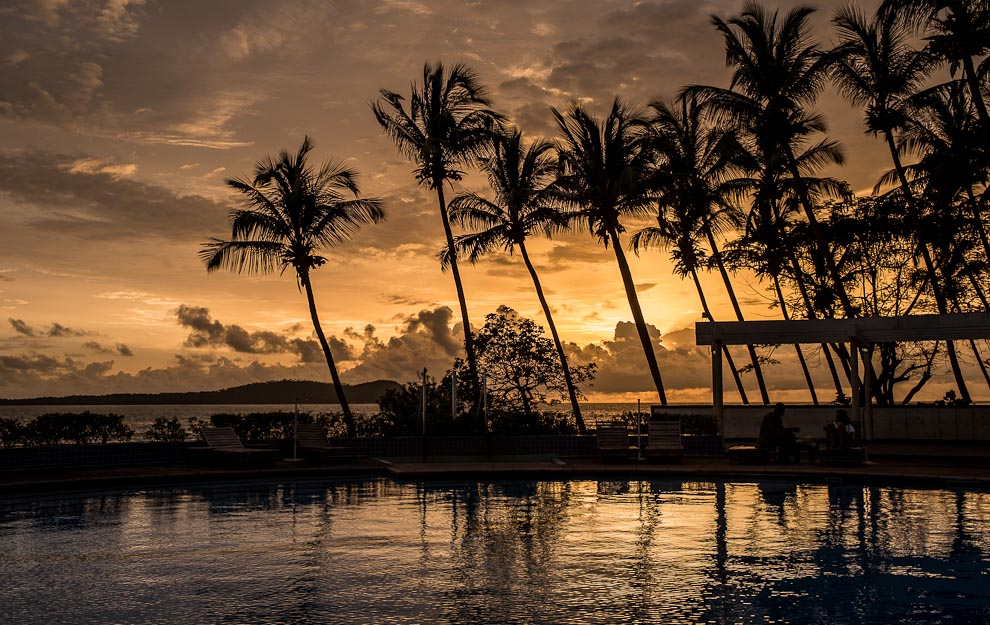